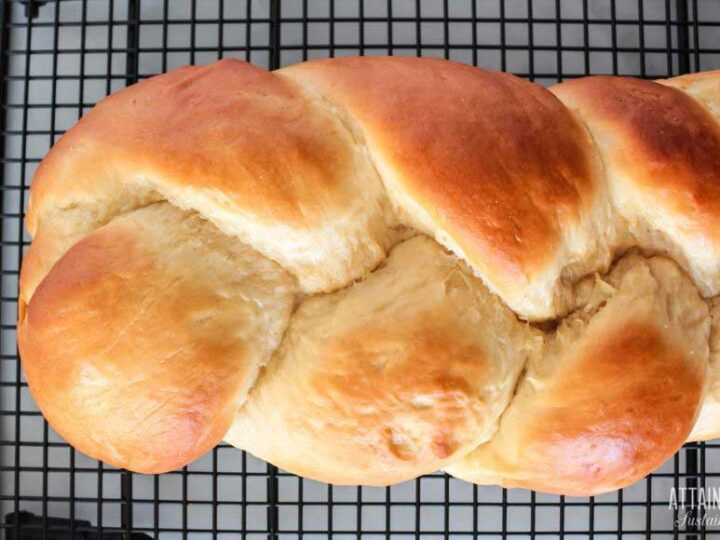

Sweet Bread Recipe

Description
This Portuguese sweet bread recipe was traditionally baked for Easter celebrations at my house. It’s sweet and perfect fresh out of the oven with a pat of butter. Turns out, this deliciousness doesn’t have to be reserved for just holidays!
Ingredients
- 1 cup of milk
- ⅓ cup white sugar
- ⅓ cup butter
- 1 tablespoon active dry yeast
- 4 cups all-purpose flour
- ½ teaspoon salt
- 2 eggs
- 2 tablespoons vegetable oil
Preparation
- In a small saucepan over medium heat, combine the milk, sugar and butter. Heat until slightly warm to the touch then remove from heat and stir in the yeast. Let stand until foamy, about 10 minutes.
- In a large bowl, stir together the flour and salt. Mix in the eggs, oil and the yeast mixture. Mix until dough pulls away from the sides of the bowl. Turn dough out onto a floured surface and continue to knead until the dough is smooth and elastic, about 10 minutes. Grease a large bowl with 1 tablespoon of oil. Place the dough into the bowl and turn once to coat. Cover and let stand in a warm place until double in size, about 1 hour.
- Use remaining oil to grease a cookie sheet or 9x13 inch pan. For plain rolls, punch down dough and divide into 12 equal pieces. Roll the pieces into balls and place them into the greased pan side by side. Let dough rise for 20 to 25 minutes, or until almost double. Preheat oven to 375 degrees F (190 degrees C).
- Bake for 20 to 25 minutes in the preheated oven, until rolls are golden brown.